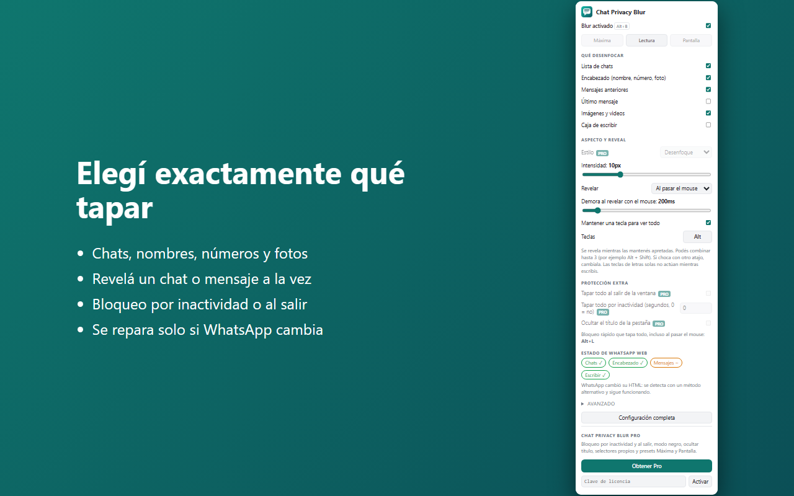
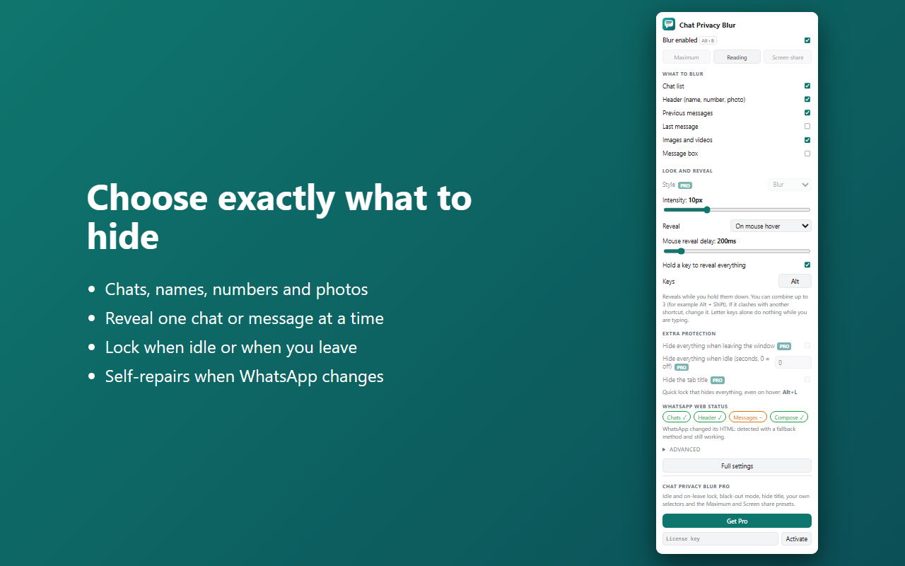
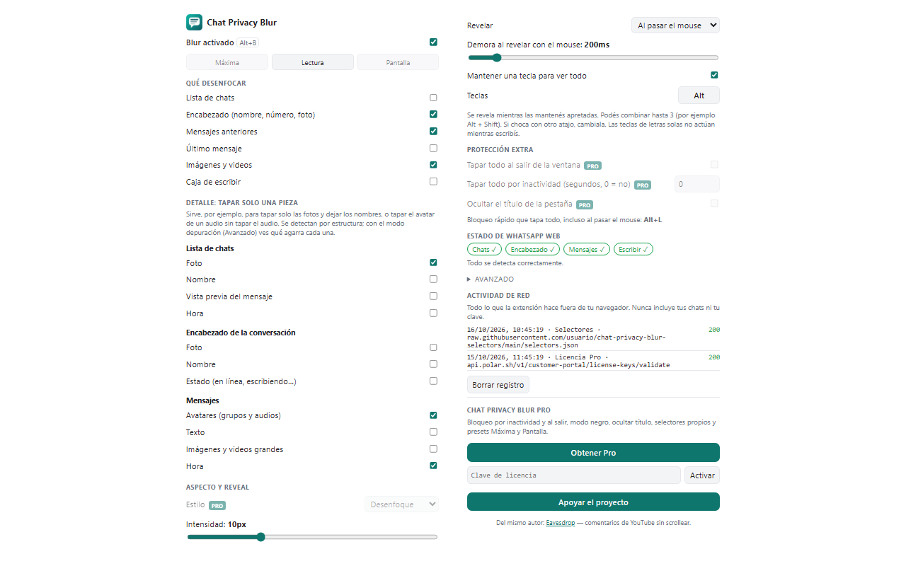
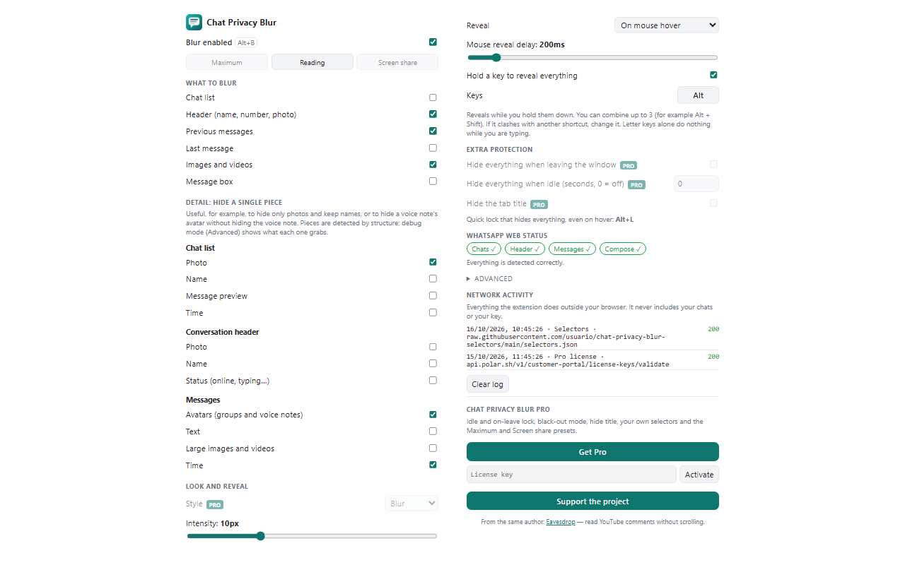

Tapá tus chats. Leé solo lo que importa.
Hide your chats. Read only what matters.
Chat Privacy Blur desenfoca la lista de chats, los nombres, las fotos y los mensajes de WhatsApp Web, para que nadie lea por encima de tu hombro. Vos elegís qué tapar y qué revelar.
Chat Privacy Blur blurs the chat list, names, photos and messages on WhatsApp Web, so nobody reads over your shoulder. You choose what to hide and what to reveal.
Disponible muy pronto en el Chrome Web Store.Coming very soon to the Chrome Web Store.
Sin cuenta. Sin rastreo. Sin publicidad.No account. No tracking. No ads.
Pasá el mouse por un mensaje para revelarlo. Mantené Alt para ver todo.Hover a message to reveal it. Hold Alt to see everything.
Elegís qué tapar y cómo revelarlo
You choose what to hide and how to reveal it
Cada cosa se prende y se apaga por separado, y se configura desde el ícono de la extensión.
Everything toggles separately and is configured from the extension icon.
Sector por sector
Sector by sector
Lista de chats (cada conversación por separado), encabezado con nombre y número, mensajes anteriores, último mensaje, imágenes y caja de escribir.
Chat list (each conversation on its own), header with name and number, previous messages, last message, images and the message box.
Pieza por pieza
Piece by piece
Tapá solo las fotos y dejá los nombres, o el avatar de un audio sin tapar el audio. Foto, nombre, vista previa, hora y estado, por separado.
Hide only photos and keep names, or a voice note's avatar without hiding the voice note. Photo, name, preview, time and status, separately.
Revelá solo lo que leés
Reveal only what you read
Al pasar el mouse se revela un solo chat o mensaje, con una demora que ajustás para no destapar sin querer. O con clic, de a uno.
Hovering reveals a single chat or message, with an adjustable delay so you don't uncover things by accident. Or on click, one at a time.
Mantené una tecla para ver todo
Hold a key to see everything
Alt por defecto, o la combinación de hasta 3 teclas que prefieras si choca con otro atajo.
Alt by default, or any combination of up to 3 keys you prefer if it clashes with another shortcut.
Bloqueo rápido
Quick lock
Un atajo (Alt+L) tapa todo al instante, incluso al pasar el mouse. Útil cuando alguien se acerca.
One shortcut (Alt+L) hides everything instantly, even on hover. Handy when someone walks up.
Se tapa solo Pro
Hides by itself Pro
Tapa todo tras un tiempo de inactividad o al salir de la ventana, y oculta el título de la pestaña ("(3) WhatsApp").
Hides everything after a period of inactivity or when you leave the window, and masks the tab title ("(3) WhatsApp").
Se repara solo
Self-repairing
WhatsApp cambia su HTML seguido. La extensión prueba varios selectores, detecta por estructura si fallan, y te muestra qué detecta.
WhatsApp changes its HTML often. The extension tries several selectors, falls back to structure detection, and shows you what it detects.
Cómo funciona
How it works
Tres pasos y sin configurar nada.
Three steps, no setup needed.
Instalala
Install it
Agregala a Chrome (también funciona en Edge y Brave).
Add it to Chrome (it also works in Edge and Brave).
Abrí WhatsApp Web
Open WhatsApp Web
Todo se desenfoca al instante, menos lo que decidas dejar visible.
Everything blurs instantly, except what you decide to keep visible.
Revelá lo que necesitás
Reveal what you need
Mouse, clic o una tecla. Ajustá todo desde el ícono de la extensión.
Mouse, click or a key. Adjust everything from the extension icon.
Capturas
Screenshots






Gratis, con Pro opcional
Free, with optional Pro
Por ahora, todo está incluido y es gratis.
For now, everything is included and free.
Lo esencial es gratis para siempre. Pro suma comodidad extra, con un pago único.
The essentials are free forever. Pro adds extra convenience, with a one-time payment.
Gratis
Free
- Todos los sectores a desenfocar
- Reveal por mouse, clic o tecla
- Demora de reveal ajustable
- Bloqueo rápido
- Reparación automática
- Bloqueo por inactividad y al salir
- Modo negro y selectores propios
- All sectors to blur
- Reveal by mouse, click or key
- Adjustable reveal delay
- Quick lock
- Self-repair
- Idle and on-leave lock
- Black-out mode and own selectors
Pro
- Todo lo gratuito
- Bloqueo por inactividad y al salir de la ventana
- Modo negro
- Ocultar el título de la pestaña
- Selectores CSS propios
- Presets Máxima y Pantalla
- Everything in Free
- Idle and on-leave lock
- Black-out mode
- Hide the tab title
- Your own CSS selectors
- Maximum and Screen share presets
FAQ
¿Lee o guarda mis mensajes?
Does it read or store my messages?
No. Solo aplica un efecto visual sobre la página, dentro de tu navegador. No recolecta, guarda ni envía mensajes, contactos ni números. No usa servidores propios ni analítica.
No. It only applies a visual effect to the page, inside your browser. It does not collect, store or send messages, contacts or numbers. No own servers, no analytics.
¿Qué pasa si WhatsApp cambia su diseño?
What if WhatsApp changes its design?
La extensión prueba varios selectores y, si fallan, detecta los elementos por su estructura. El popup te muestra qué se detecta. Si algo se rompe, se corrige con una actualización.
The extension tries several selectors and, if they fail, detects elements by structure. The popup shows what is detected. If something breaks, it is fixed with an update.
¿Funciona en el celular o en la app de escritorio?
Does it work on mobile or the desktop app?
No. Es una extensión de navegador: funciona en WhatsApp Web (web.whatsapp.com) con Chrome, Edge o Brave en computadora.
No. It is a browser extension: it works on WhatsApp Web (web.whatsapp.com) with Chrome, Edge or Brave on a computer.
¿Está afiliada a WhatsApp?
Is it affiliated with WhatsApp?
No. Chat Privacy Blur es un proyecto independiente, no afiliado, asociado ni respaldado por WhatsApp ni por Meta.
No. Chat Privacy Blur is an independent project, not affiliated with, associated with or endorsed by WhatsApp or Meta.
¿Puedo elegir otra tecla para ver todo?
Can I choose another key to see everything?
Sí. Desde el popup elegís una tecla o una combinación de hasta 3, por si Alt choca con otro atajo.
Yes. From the popup you pick a key or a combination of up to 3, in case Alt clashes with another shortcut.
Tu privacidad, a tu manera
Your privacy, your way
Instalala y dejá de preocuparte por quién mira tu pantalla.
Install it and stop worrying about who is looking at your screen.
Agregar a Chrome — es gratisAdd to Chrome — it's freeDisponible muy pronto en el Chrome Web Store.Coming very soon to the Chrome Web Store.